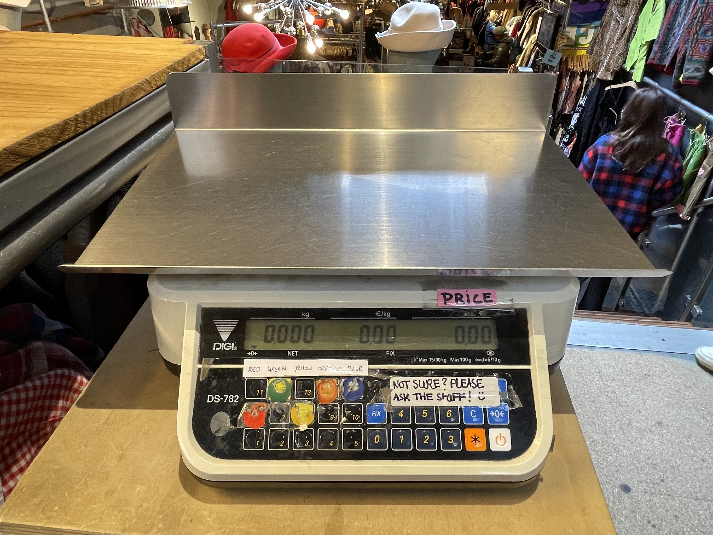
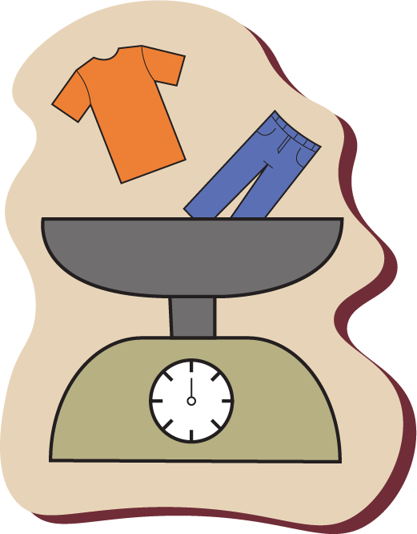
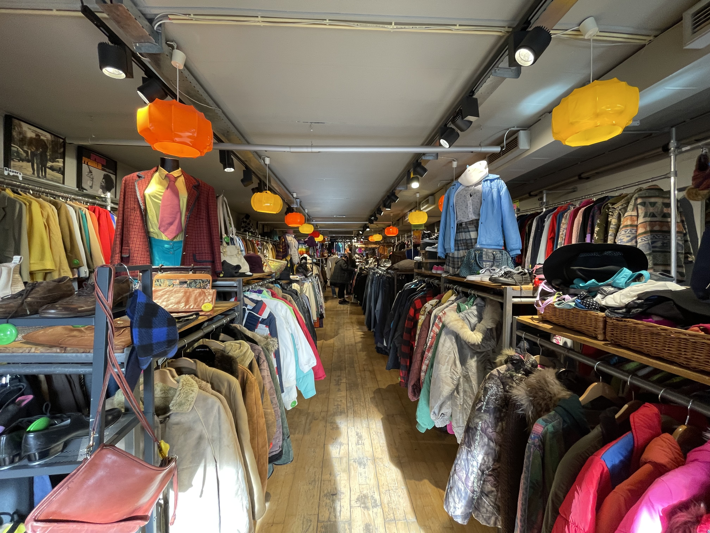
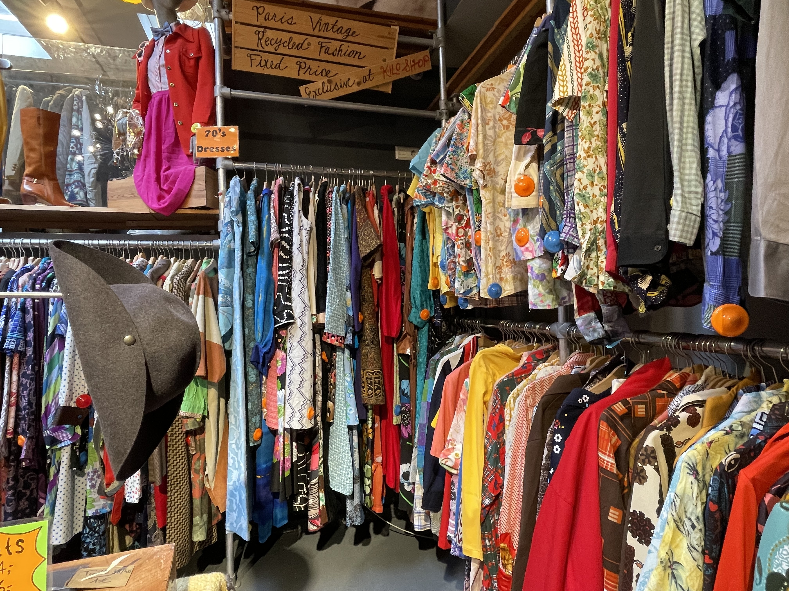
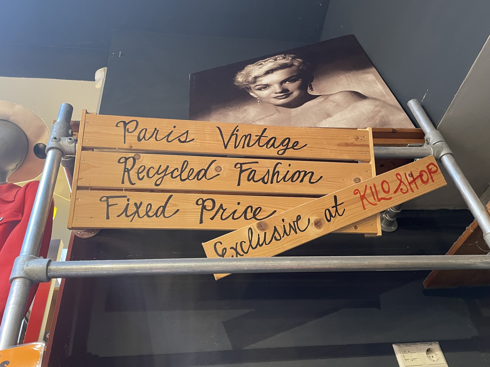
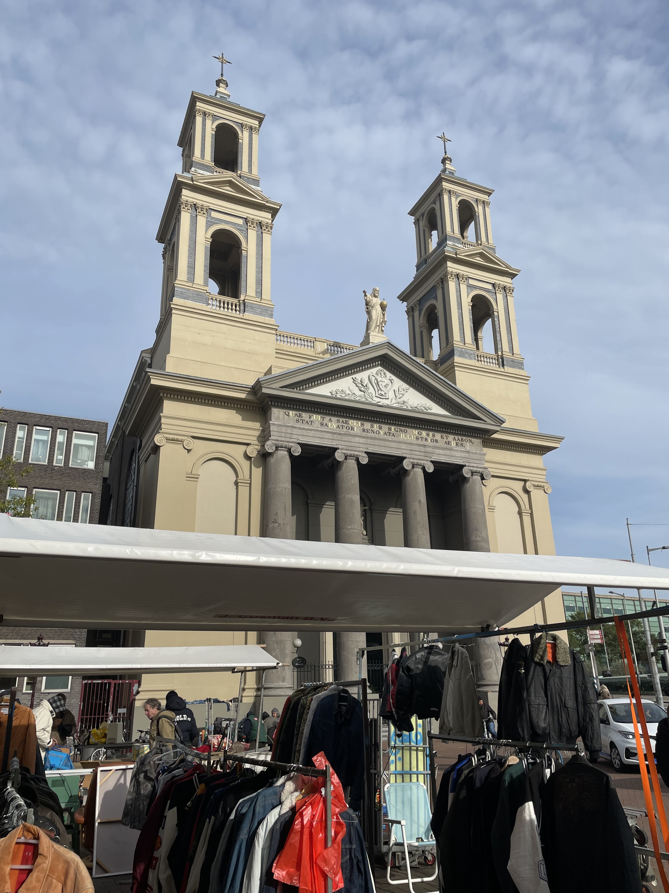
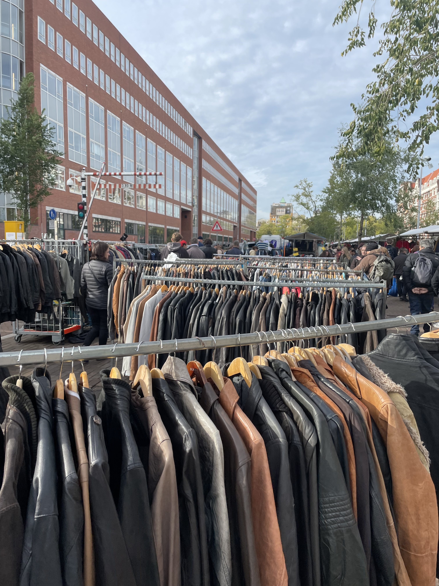
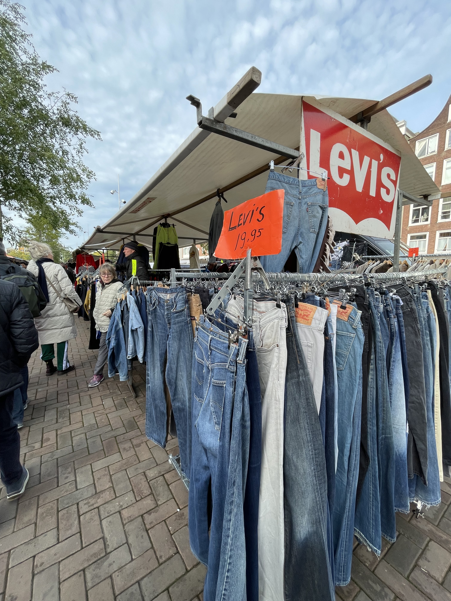

Welkom bij onze wegwijzer! Laten we is in zoomen op een van de leuke winkels van het waterlooplein, namelijk de Kilo Store!
Kilo store
De kilo store nemen we aan als eerste vintage kledingwinkel om mee te beginnen. Het is een bekender bedrijfje dat zich op drie verschillende plekken heeft gevestigd in Amsterdam.
De kilo store is een vrij grote vintage kledingwinkel met heel veel verschillende stijlen. De winkel heeft ook een leuk concept:je betaalt je vintage kleding items die je hebt uitgekozen op basis van het gewicht. Er staan in de winkel een paar weegschaaltjes waar je je items kan wegen. Op elke item zit een gekleurd alarm tag die bijvoorbeeld: groen, rood, geel, oranje of blauw etc. kan zijn. Die kleur klik je aan op de weegschaal en dan verteld ie je de bij passende prijs. Leuk toch?
Weight your clothes!
Locatie
Waterlooplein 199, 1011 PG Amsterdam.
Altijd van 11.00 tot 19.00 uur open behalve op zondag: 11.00 tot 18.00
lets go!Reviews en gedeelde ervaringen:
lets go!Kilo store Inside:
  Waterlooplein
Wat is er nog meer te zien in het Waterlooplein? Het Waterlooplein is een bruisend en historisch deel van Amsterdam dat zich prefect leent voor een duurzaam winkelavontuur. Er zijn meerdere vintage kledingwinkels zoals Candy, Episode en meer. Maar ook bevindt zich daar een markt die open is van maandag tot zaterdag van 9.30 tot 18.00. Op deze markt wordt ook veel tweedehands kleding verkocht en dit is ook zeker een bezoekje waard. Hier de officiële site voor deze markt: waterlooplein.amsterdam
  
Ben je geïnteresseerd in meer locaties of eventuele routes door Amsterdam met vintage kledingwinkels om er lekker dagje thriften in Amsterdam van te maken?
meer...